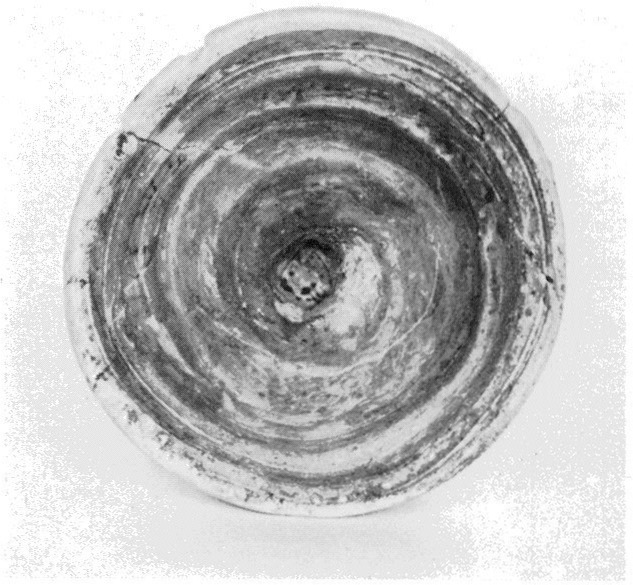
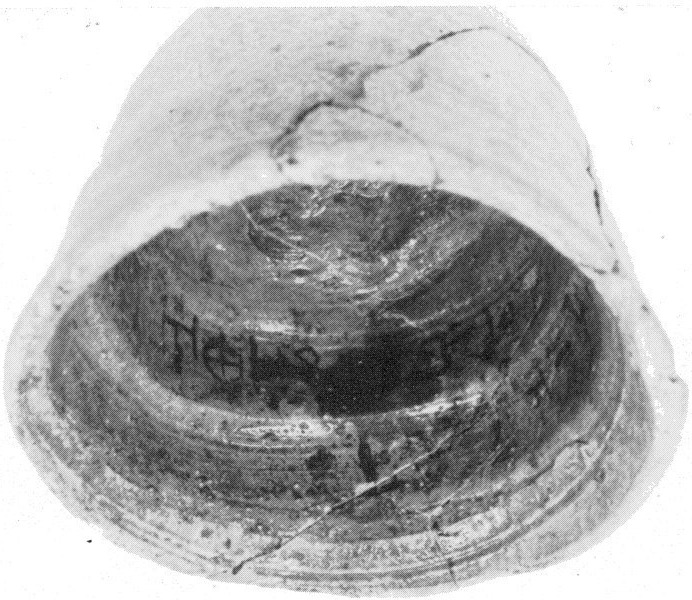
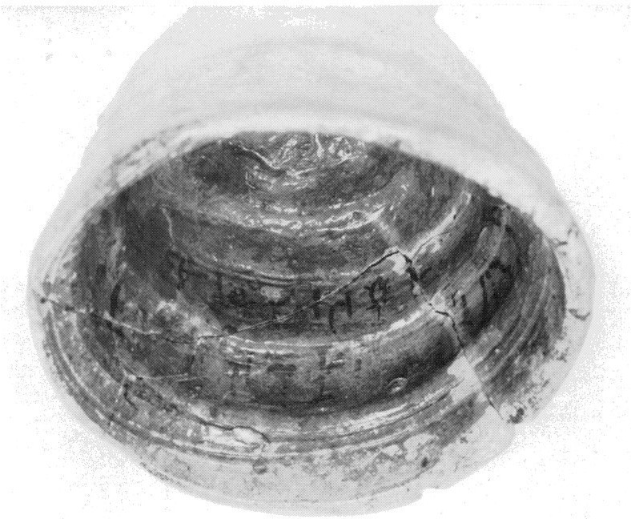
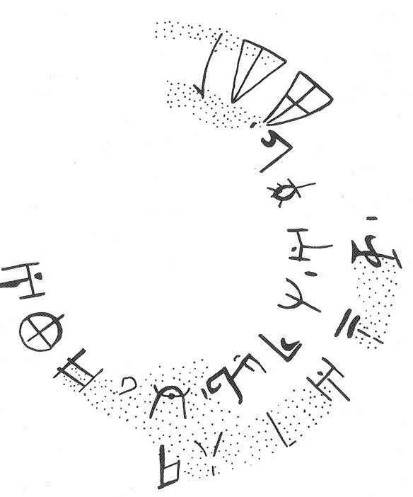

-
KNZc7
Names
KNZc7, KN Zc 7
Support
Inked inscription
Location
Knossos
Findspot
Unavailable




Scribe
Unavailable
Context
Not Available
Dimensions
Catalogue
Hiraklion Museum
Readings
1 1 0 A none
1 1 0 KA none
1 1 0 NU none
1 1 0 ZA none
1 1 0 TI none
1 1 1 *900 none
1 1 2 DU none
1 1 2 RA none
1 1 2 RE none
1 1 3 *900 none
1 1 4 A none
1 1 4 ZU none
1 1 4 RA none
1 1 5 *900 none
1 2 6 JA none
1 2 6 SA none
1 2 6 RA none
1 2 6 A none
1 2 6 NA none
1 2 6 NE none
1 2 7 *900 none
1 2 8 WI none
1 2 8 PI none
1 2 9 *900 none
𐘇𐘾𐘯𐘍𐘠𐄁𐘬𐘴𐘙𐄁𐘇𐙀𐘴𐄁𐘱𐘞𐘴𐘇𐘅𐘗𐄁𐘣𐘢𐄁
AKANUZATI*900DURARE*900AZURA*900JASARAANANE*900WIPI*900
𐘇𐘾𐘯𐘍𐘠𐄁𐘬𐘴𐘙𐄁𐘇𐙀𐘴𐄁
𐘱𐘞𐘴𐘇𐘅𐘗𐄁𐘣𐘢𐄁
AKANUZATI*900DURARE*900AZURA*900
JASARAANANE*900WIPI*900
KN
Zc 7
(HM 2629) (GORILA IV: 122-125), painted inscription in
semi-circular registers in the interior of a short conical cup,
the top of the signs oriented toward the bottom of the cup (Basement
of
Monolithic Pillars, MM III?; PM I 588 fig. 431b, 613-16, fig.
452) signs
oriented
upside down (Basement of Monolithic Pillars, MM III?)
A-KA-NU-
ZA
-TI • DU-RA-RE • A-
ZU
-RA •
JA-
SA
-
RA
-A-NA-NE • WI-PI-[•]
sign-group 3, GORIlA reads
ZU
presumably because
of
the fringe around the top loop; otherwise, however, the sign resembles the
ankh-like *17 ZA.
JGY: A-KA-NU-
ZA
-TI resembles a muddled U-NA-RU-KA-NA-TI,
DU-RA-RE a muddled DU-PU2-RE, and JA-
SA
-
RA
-A-NA-NE a muddled
JA-SA-SA-RA; WI-PI-• may then be a muddled I-PI-NA-MA. If all this is
so, the two cups would carry deliberately garbled religious expressions
seen in clearer form in the Libation Formula.
Commentary © John Younger
References
papers/GORILA-Vol4.pdf#page=166